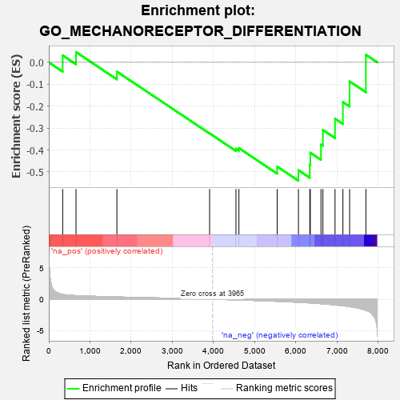
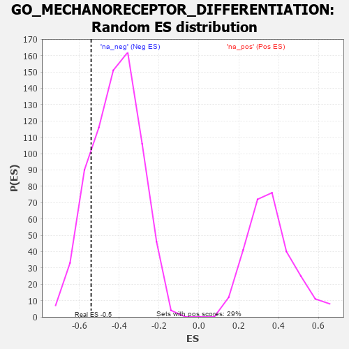

| | | Dataset | 7d |
| Phenotype | NoPhenotypeAvailable |
| Upregulated in class | na_neg |
| GeneSet | GO_MECHANORECEPTOR_DIFFERENTIATION |
| Enrichment Score (ES) | -0.5401596 |
| Normalized Enrichment Score (NES) | -1.2879449 |
| Nominal p-value | 0.18181819 |
| FDR q-value | 0.4888269 |
| FWER p-Value | 1.0 |
Table: GSEA Results Summary

Fig 1: Enrichment plot: GO_MECHANORECEPTOR_DIFFERENTIATION
Profile of the Running ES Score & Positions of GeneSet Members on the Rank Ordered List
| PROBE | GENE SYMBOL | GENE_TITLE | RANK IN GENE LIST | RANK METRIC SCORE | RUNNING ES | CORE ENRICHMENT | | 1 | DLL1 | | | 337 | 0.760 | 0.0318 | No |
| 2 | HES5 | | | 661 | 0.571 | 0.0469 | No |
| 3 | ESRP1 | | | 1653 | 0.364 | -0.0421 | No |
| 4 | JAG2 | | | 3903 | 0.010 | -0.3238 | No |
| 5 | NTRK2 | | | 4543 | -0.104 | -0.3940 | No |
| 6 | ATOH1 | | | 4615 | -0.121 | -0.3911 | No |
| 7 | FGFR1 | | | 5543 | -0.332 | -0.4753 | No |
| 8 | JAG1 | | | 6060 | -0.494 | -0.4920 | Yes |
| 9 | IFT88 | | | 6335 | -0.590 | -0.4689 | Yes |
| 10 | IFT27 | | | 6348 | -0.596 | -0.4122 | Yes |
| 11 | MKS1 | | | 6607 | -0.715 | -0.3749 | Yes |
| 12 | USH1G | | | 6654 | -0.740 | -0.3085 | Yes |
| 13 | FAT4 | | | 6948 | -0.901 | -0.2574 | Yes |
| 14 | WHRN | | | 7139 | -1.025 | -0.1813 | Yes |
| 15 | MYO7A | | | 7302 | -1.175 | -0.0870 | Yes |
| 16 | MYO6 | | | 7697 | -1.753 | 0.0344 | Yes |
Table: GSEA details [plain text format]

Fig 2: GO_MECHANORECEPTOR_DIFFERENTIATION: Random ES distribution
Gene set null distribution of ES for GO_MECHANORECEPTOR_DIFFERENTIATION